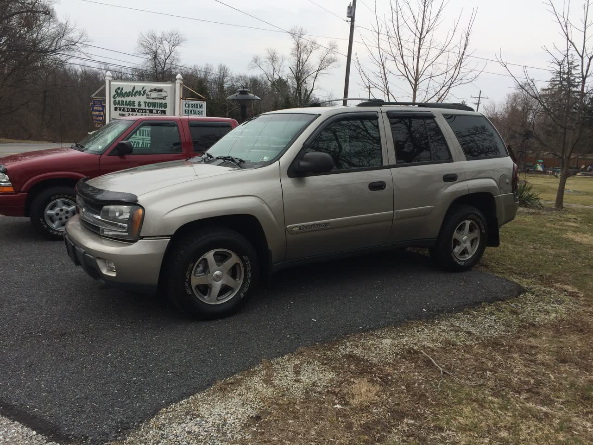
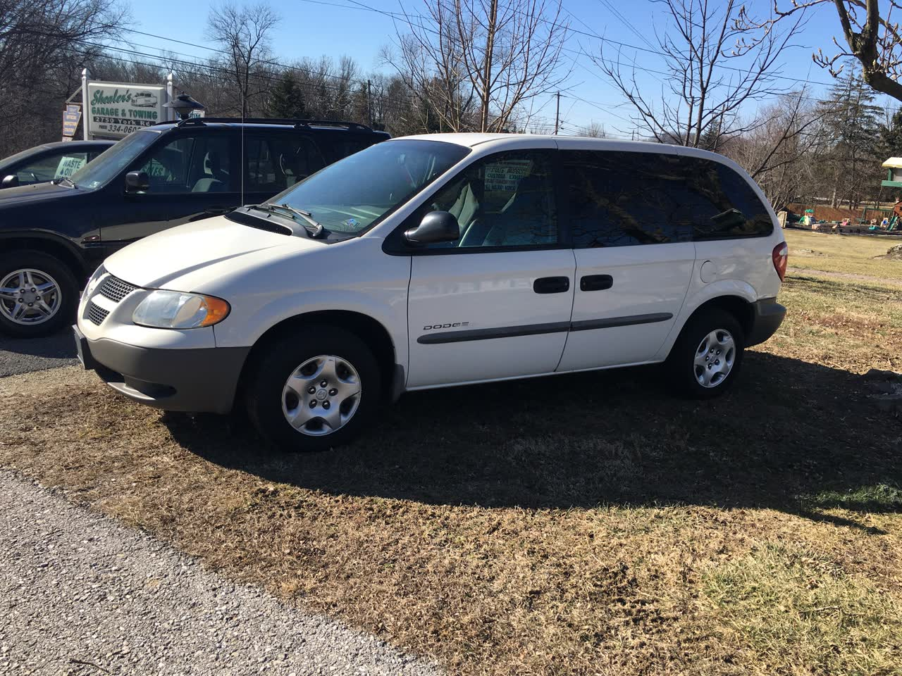
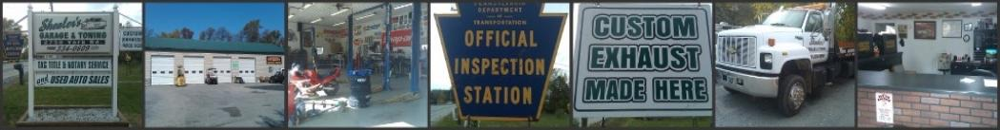
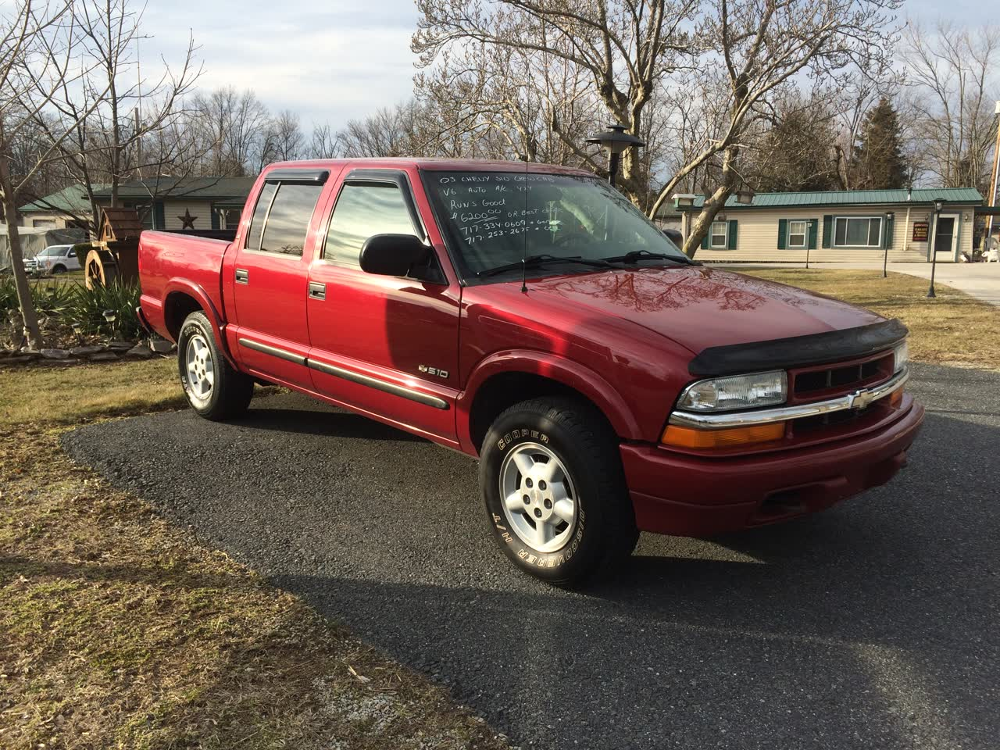
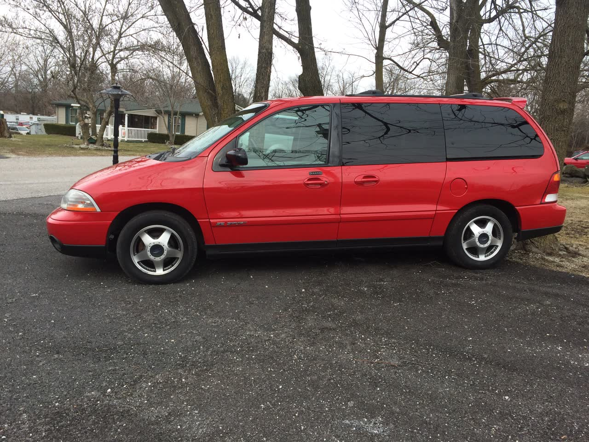
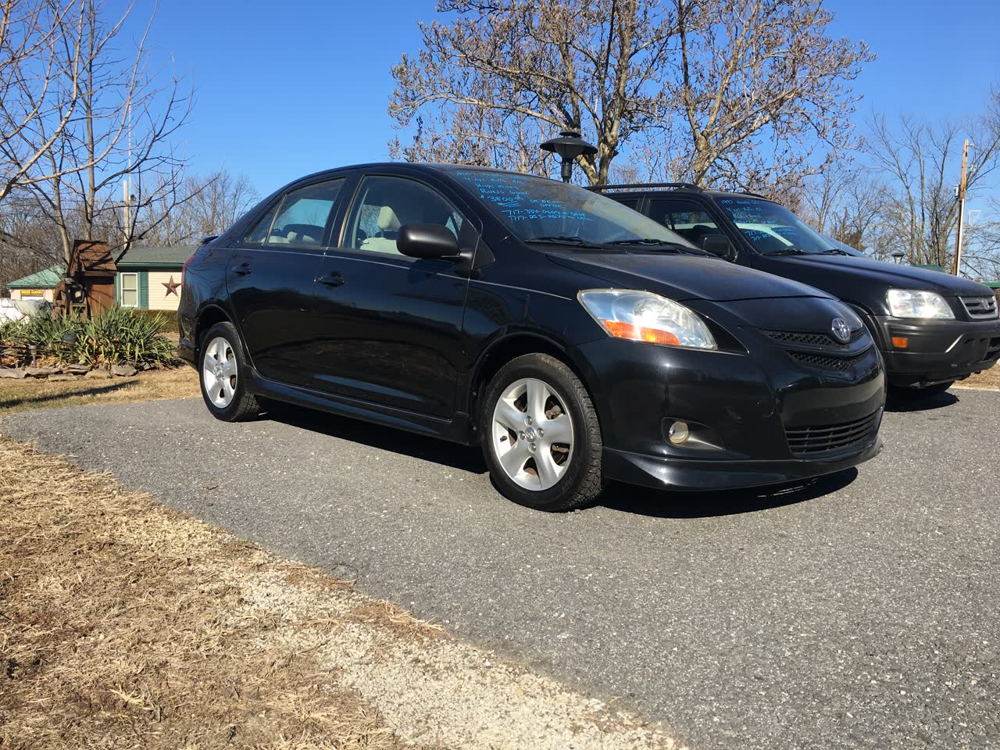
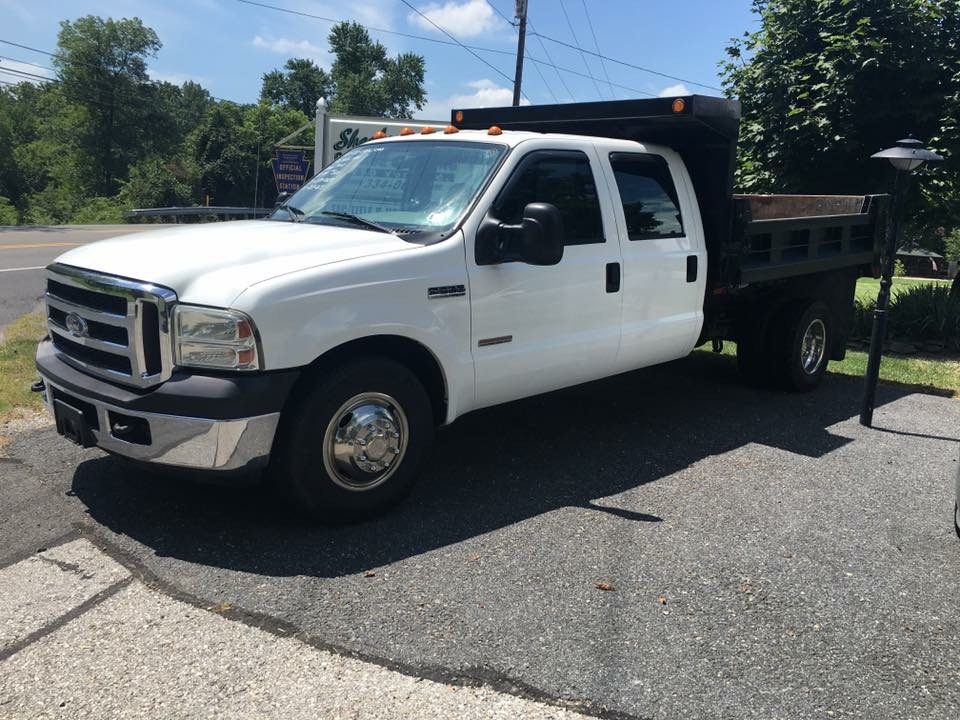
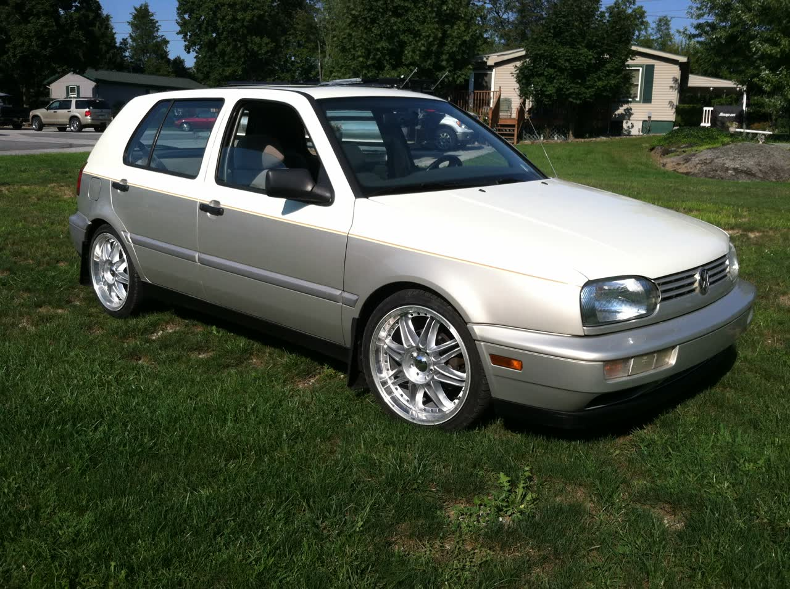
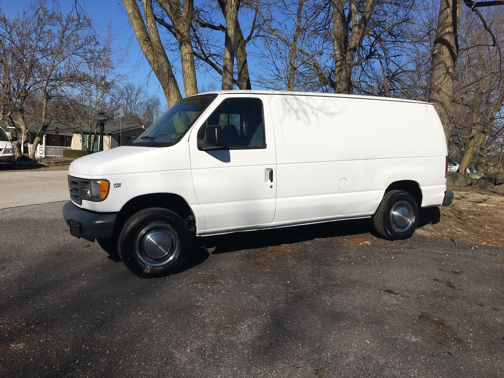
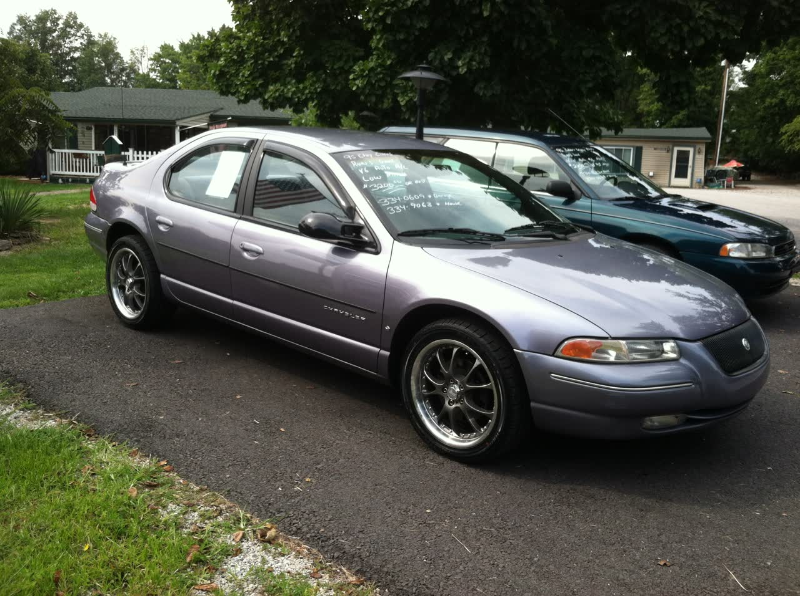

Repairs
All major and minor repairs on foreign and domestic cars, trucks and vans: brakes, tune-ups, A/C, electrical, engines and transmissions.
Rt 30 East · 5 miles from historic Gettysburg
Major and minor repairs for foreign and domestic cars, trucks and vans. PA state inspections, custom exhaust, towing, plus tag, title and notary service, all at one shop on York Road.
Mon – Fri 9 am – 7 pm · Sat 9 am – 3 pm

garage bays at our York Road shop
generations, locally owned and operated
east of historic Gettysburg, off the US 15 bypass
for most repairs*, so you're back on the road fast
* Except major repairs.
What we do
All major and minor repairs on foreign and domestic cars, trucks and vans: brakes, tune-ups, A/C, electrical, engines and transmissions.
Pennsylvania state inspections for cars, trucks and trailers.
We specialize in custom exhaust work: mufflers, catalytic converters, manifolds and headers.
Local towing service. The people who tow your car are the people who fix it.
Online tag, title and notary services and registration renewals, open to the general public.
Locally owned used cars, gone over bumper to bumper, plus full auto detailing.

About the shop
“We pride ourselves on the ability to complete almost any job that comes through our doors.”
Shealer's Garage & Towing has been locally owned and operated for two generations. Our shop sits at 2750 York Road, just five miles east of historic Gettysburg on Rt 30 East, off the US 15 bypass. The facility has four garage bays, and every vehicle on the property is kept secure.
Certified technicians, honest and prompt service, and fair rates. Walk-ins are welcome, and appointments are available.

Finding us
Take York Road (Rt 30 East) out of historic Gettysburg. We're at number 2750, off the US 15 bypass, about five miles from town.
On the lot
Every vehicle that comes through the shop is gone over from bumper to bumper, the interior is cleaned, and it's sold with a PA inspection and a full detail. Call to ask what's on the lot now.







Photos from earlier stock. Inventory changes, so call (717) 334-0609 for what's available today.
What customers say
We were traveling from New York to Atlanta and the car broke down. They came in early on a Saturday to fix it. It was done by 10am. They drove us to the nearest hotel to spend the night because we broke down the night before. They went out of their way to help us and we really appreciate it.
Customer review
Awesome people, recently traveled to Gettysburg and had an issue with my exhaust system. These guys took us right in and fixed us up at a very reasonable price. Can't say enough about what they did for us on short notice.
Customer review
My husband's mail jeep went down and he couldn't work. I called all over the place to find someone who could work on it fast. Shealer said to bring it in and he had it back on the road within 24 hours. Looks like we have a new mechanic!
Customer review
Went to get tags, title and inspection, was very surprised at how great customer service was, not to mention they were very affordable. They found a hidden problem that needs immediate attention even though we have brought the same car to 2 different shops.
Customer review
I was looking for a muffler system for my van, I showed Tim what I wanted done and it was put together in no time. I am totally satisfied, and would recommend them to anyone. You could not ask for a better shop to work on your car.
Customer review
Reviews as published on gettysburgautorepair.com, lightly shortened.
Good to know
No. We accept walk-ins; however, appointments are available. Call (717) 334-0609 or send the form below.
Yes. We're an official PA inspection station and inspect cars, trucks and trailers.
Most work is done within 1–3 days. Major repairs can take longer.
Yes. We offer online tag, title and notary services and registration renewals to the general public, not only to repair customers.
Cash, Visa, MasterCard and personal checks.
2750 York Road, Gettysburg, PA 17325, about five miles east of historic Gettysburg on Rt 30 East, off the US 15 bypass.
Contact
| Monday – Friday | 9:00 am – 7:00 pm |
| Saturday | 9:00 am – 3:00 pm |
| Sunday | Closed |